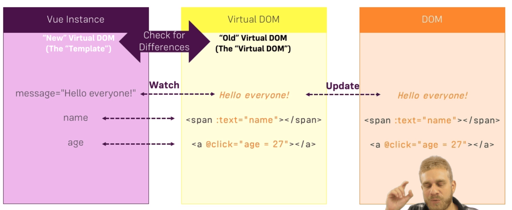

For string interpolation (dynamically outputting a JavaScript string into HTML) in Vue you use curly braces {{ }} but this only works for outputing text.
If you change a data property in a method, all instances of that property will be changed. If you want to dynamically output a data property AND DO NOT want it to be changed once rendered, (like a const in es6) we can use another directive - v-once - for that.
Output from data property - {{ title }}
Output from method return - {{ sayHello() }}
Output from data property within a method return - {{ outputTitle() }}
By default, Vue escapes HTML - meaning it does not render HTML elements when you try to dynamically add a full HTML element into the DOM from a JavaScript string.
{{ linkElement }}
But if we want to dynamically render HTML code from our string in our data property, we can use another Vue directive called v-html. You pass the data property as the value and it will render the HTML inside the string into the DOM.
Instead of using data properties and methods in your HTML elements every time, you could also use JavaScript inside your HTML code as long as it returns a single expression and does not include any conditional or advanced logic.
{{ counter * 2 }}
{{ counter * 2 > 10 ? 'Greater than 10' : 'Smaller than 10'}}
To output a dynamic value for a HTML attribute (like change the href in a link tag) you must use directives. The directive we use to dynamically inject the string link is v-bind. To pass an argument to a directive you use a colon : (v-bind:href="link"). Notice we do not use curly braces in the quotation marks of the directive, only the name of the data property.
A directive is a marker in the DOM that attaches a specific behaivor to that element.
Link to Google - Google
To listen to events in Vue we can again use directives in our HTML. To listen for events we can use the - v-on - directive followed by the event we are listening for separated by a colon
(v-on:click="methodName")
{{ counter }}
When an event happens, there is a default event object passed as a parameter to the event method. So as you can see in the method, we can console.log() the event object to see the Mouse event object that gets passed every time the event is triggered.
When you want to both add your own parameters and have the event object also passed as a parameter, you can do this very simply by including the event (or e) parameter in your method along with your own custom parameters and when you actually invoke the function. You pass the $event namespace as the parameter.
Sometimes we will want to add a modifier to an event. To do this we just add a . after the event and declare the modifier we want to use (v-on:mousemove.stop). This tells Vue when we mouse over the element with this directive we want to STOP the propogation of the event.
Coordinates: {{ x }} / {{ y }} - DEAD SPOT
Two way binding is both outputting data and listening for incoming events at the same time. Adding a v-model directive can declare a 2 way binding.
{{ name }}
So with the 2 way data binding the output data property will automatically be changed by the listening event placed on the element.
We can replace directives v-on and v-bind with shorthands to make for faster development. You can replace v-on with the @ symbol and v-bind with nothing just the :attribute.
v-on:click ----> @click
v-bind:href ----> :href
We can also listen to keyboard events. We do this by adding the v-on:keyup event. So every time the user presses a key and releases, an event will be fired.
We can also listen for when users type a specific key. To do this we just add a MODIFIER (using a . after the event like shown in previous example). So if we wanted to listen for when a user clicked the enter key we would do -- v-on:keyup.enter -- this would trigger an event every time the user clicks the enter button.
When you invoke a function inside the methods object inside your HTML, this method will rerender EVERY time one of your data properties is changed. This is unnecessary especially if you are not even manipulating one of the data properties.
You can tell this because every time we update our secondCounter property, the result() function is invoked even though the secondCounter property has nothing to do with the method meaning the code is running unnecessarily.
To prevent these methods from being rerendered every time a property is changed, we can instead use a computed property. Computed properties are advanced properties that are configured through a function.
So now every time a property is changed, Vue looks inside the computed function to see if a specific property was changed, and if the specified property is changed only THEN the computed function is invoked. If the specific property does not show up in the computed function, the function will not rerender every time as the result() method does.
Counter: {{ counter }}
Second Counter: {{ secondCounter }}
Result: {{ result() }} | {{ output }}
In addtion to computed, we can also use the watch object in our Vue instance to watch for changes to a specified data property and invoke then invoke the method specified in the watch object.
So the computed functions will analyze the code and invoke the function only if a specific property within its function has been changed and with watch functions you get to invoke a function when a specific data property you specify is changed.
The instructor states it is best practice to use computed properties whenever you can simply because they are more optimized.
To dynamically include/remove CSS classes to an element you can use the :class directive followed by an object wrapped in parenthesis. The property name should be the class name you want to give the element and the value should be the boolean value of whether the class should be added to the element or not.
If we were wanting to manipulate multiple classes within an element, the object in the HTML attribute might become complex so we can instead do this through a computed JavaScript object.
You can see in the computed function we can return an object that manipulates multiple css classes at once and changes the element accordingly. And now this makes it to where we can just use the computed property name as the :class directive value instead of a long ugly object in a string.
You do not always have to include CSS classes just by conditionals, we can also include CSS classes just by name. Instead of an object stating whether the the class should be appended or not, we can just simply add the name of the class we want appended and it will be added to the element.
You can see we can now type green, blue, or red (the class names we have specified in our CSS) to dynamically change the background color or the box.
In our :class directive we can use an array to structure our classes. So if our first array element is false(undefined), the second class will be appended like shown in the example.
You can also dynamically change the style attribute of an element by using the (v-bind):stlye directive.
You set your style the same way you set classes, by including the styles inside of a JS object within (single) quotes -- :style="{ backgroundColor: color }" --
You can also use the array syntax also like the class styling. If our first array element is falsy(undefined), the second style will be appended like shown in the example.
We can conditionally render elements by using the v-if directive. It takes a boolean value, which will render the element if set to true and will not render the element if set to false. v-if will also render/remove all child elements within the element the directive is placed on.
You can also use the v-else directive which renders an element only when the v-if directly above is not rendered.
v-else-if directive is also a newly available feature in Vue. Although it is not documented in the course, return to this later.
I will show because the boolean is set to true!
This is shown with the v-else condition.
I will only show when the boolean is set to false!
If we want to wrap a bunch of different elements in a conditional, we could use the HTML5 template to wrap all our HTML into 1 conditional.
Multiple elements rendered from one conditional!
Like mentioned before, the v-if directive COMPLETELY appends/removes the entire element from the DOM. But if we were to want to just hide/show an element we could use v:show
This element is shown because set property is set to true, if property were to be set to false this element would STILL BE IN THE DOM but hidden from view (using the display:none property in CSS).
When we have data with multiple values, we can render lists in Vue with the v-for directive. To use this directive we can do -- v-for="(person, i) in persons" -- we create a variable (person) for each instance of the array (persons) and we use DOUBLE BRACES to print the each value into our HTML.
Notice in the highlighted directive above, we have both the variable (person) as well as the index (i) of each item returned by passing it inside the parenthesis after the variable.
Just as we did for conditionals, if we wanted to iterate through an array and use multiple elements to display the data in the v-for loop, we can use a template
{{ i }}
Looping through JS objects we can do it the exact same way as looping through an array of single items. But if we wanted to loop through the properties of every object in the array we would have to use a v-for loop inside of our v-for loop and iterate through each "value in person"
And just like in normal v-for getting the array's indexes, we can get both the object's key and value by using the parenthesis and included both (value must be declared first before key). You can also get the index of each item by adding it as the last item in the parenthesis (value, key, index)
You can specifically control how many times a v-for loop runs with a number v-for="n in 10" will loop 10 times as specified
Current Value: {{ eValue }}
{{ eResult }}
The Vue JS instance (every time we create a new Vue({}) ) is basically a middleman between the HTML DOM and our JavaScript business logic where we hold all the data objects like el, data, methods, comuted, and watch. This is where we can do dynamic things with JavaScript to build out our application and create a dynamic DOM.
We can use multiple vue instances on the same page. To do this we simply just created a new instance by using new Vue({}) and pointing that new instance to our new DOM element shown below. Although be aware, when we create a new instance, we can only access the properties and methods within that same instance when using the this keyword.
{{ title }}
While we cannot access the properties and methods of another instance by using the this keyword, we can change the properties and methods of a different Vue instance by storing the instance in a variable and then using that variable within the other instance.
{{ title }}
You can see that we now have access to our Vue instances not only in other Vue instances, but our regular JavaScript code outside the instance as well by just referencing the variable.
{{ titleFromJS }}
Although we can use and dynamically change our Vue instances in our normal JavaScript code, we can not create new properties from outside the instance.
Once you store the Vue instance in a variable and if you do a console.log() on the variable you will see the Vue instance in the console with a wide range of properties on the object. Including the #el and #data properties which are the reference to the HTML element and the data property object inside of the instance.
Vue also provides an easy way of referencing HTML DOM elements within your JavaScript code with the $refs object.
Change Me!
Using this $refs object is the equivilent to using getElementById() or querySelector() except it is an easy and effective way to access DOM elements inside OR outisde your Vue instance in your JavaScript code.
You use it by choosing which element in the DOM you want to target and giving it a ref="" attribute and givig the ref a name which will be added to the $refs object. Then the element is available to grab through JavaScript by using this.$refs.vueRef (if inside the Vue instance) or vm1.$ref.vueRef (if outside the instance just in regular JS code).
Although when using the $refs object to configure the DOM, if the content inside the HTML DOM you reference is dyanamic (string interpolation) any changes you make through the $refs object (for example using innerHTML) can be overwritten because the Vue instance is what is controlling the content of the element.
In some use cases, you will want to attach a Vue instance to a DOM element that has not been created yet. To do this we can use (variable name that vue instance is stored in) vm1.$mount('#elementSelector') instead of the el: {} attribute in the Vue instance to attach the business logic to the template.
This may come in handy for elements that are dynamically generated with data from a database or other use cases.
We can also create our own HTML template within our Vue instance (with some limitations). We do this by passing the instance the template: ' ' property and inputting our HTML inside a string.
When we create these vue instanes, they can only be used on one element in the DOM. Event if we target as class CSS selector element, when we use 2 elements only one will register. To register multiple Vue instances we must use components. We create components by using Vue.componenet(cssSelector, {Object with Vue properties})
Accessing the HTML DOM is the slowest part of the render/rerender phase so to improve performance Vue uses a virtual DOM - a copy of the DOM parsed in JavaScript - to update changes to properties and methods and then send those changes to the certain parts of the DOM through JavaScript.
Every Vue instance has a lifecycle consisting of functions that can be hooked into to provide user created events. For example is we use the destory() lifecycle function (the last one) which removes the Vue instance from an element entirely, the element will still exist but it just won't have the Vue instance tied to it anymore.